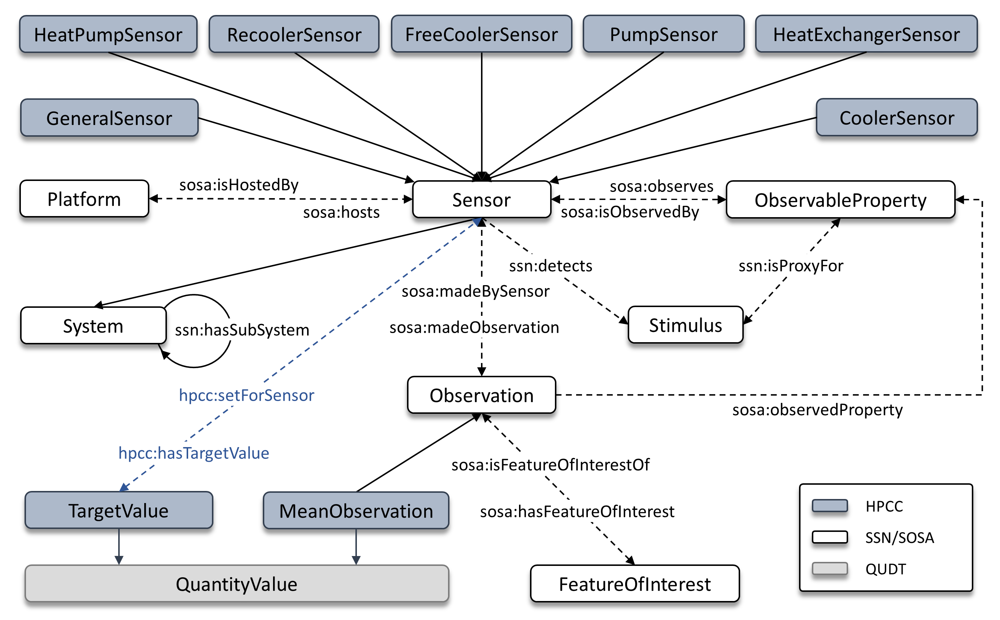

Introduction
back to ToC

Figure 1. HPCC Ontology: Core concepts and semantic relationships
Unlike ad hoc schemas or naming conventions, ontologies provide explicit semantics that can be interpreted by both humans and machines. This makes them particularly well-suited for HPC environments, where complex infrastructures generate large volumes of heterogeneous telemetry that benefit from a unified semantic layer. The HPCC ontology (Fig. 1) was developed following the SABiOx methodology, which comprises five phases: requirements collection, setup, knowledge acquisition, design, and implementation. It results from interdisciplinary collaboration across the SmartShip, hpc.bw, and HSuper data center projects, aiming to improve the energy efficiency of research-oriented supercomputing systems. HPCC builds upon the SSN/SOSA semantic model, a widely adopted modular standard for describing sensors, platforms, observations, and sampling processes in a consistent and interoperable manner. SSN/SOSA models not only sensing devices but also the observable properties they measure, making it a suitable foundation for representing HPC cooling telemetry. Where appropriate, HPCC aligns its classes and properties with QUDT to ensure consistent representation of physical quantities, numerical values, and measurement units.